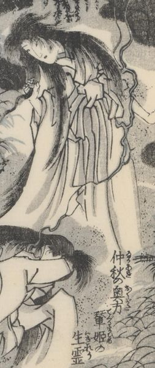

← 图鉴索引

輦姫の生霊。白装束。陰火。
著作者：一陽齋豊國ほか／出典：親書誌：U426_nichibunken_0444：庭訓武藏鐙／日付：2017／資源識別子：U426_nichibunken_0444_0002_0000
Copyright (c)2010- International Research Center for Japanese Studies, Kyoto, Japan. All rights reserved.